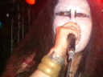

2004.03.20(SAT)�ڍ�LIVE STATION
������O�\�l�e�u�����~�Ձv
�o��:JURASSIC JADE�E ARGUMENT SOUL
NEAT 001�EDUEL�EGORGON
���i�t�q�`�r�r�h�b�@�i�`�c�d�f�r�@setlists
�h�N�E�����E�X�y���}
PLASTIC WATER MOTHER
���`�뉀
�V��6�iI found out)
�V��3�i�����݂̑�nGaza)�@
�V�ȂV�i�e�����̋G��/�O�^�C�g���FCatch Me Who Can In The Rye�j
�V��8�i����j
�V��4(�Ђ������̂����j
G.D.G.
���h���[�iAfter Killing Mam�`The Individual D-Day�j
���拾
���l�d�l�a�d�q�f�r�@comment
�g�h�y�t�l�h
�m�n�a
GEORGE
�g�`�x�`
���`�k�a�t�l
 |
Tommy����B�e |
��BBS�@comment
���͂悤�������܂����@���e�ҁF�n�k�����m�d�`�s�@�O�O�P �@���e���F 3��16��(��)22��07��55�b
���̂m�d�`�s�@�O�O�P�̂c���i�I�[���[�j�Ɛ\���܂��B
���T�y�j�̃X�e�[�V�����̃��C�u�ł��ꏏ�����Ă��������܂��̂�
�����A���Ɏf���܂����I
���͐��N�O�ɓ�g���P�b�c�ł��A���ꏏ�����Ă����������̂ł����E�E�E
�����ƁA�o���Ă�����Ă܂����ˁH�H
���x�͗E�C���o���Ă��b���ɍs�������ł��i����j
�����o�[�C��������܂���ŁA�撣��܂���
�ł́A������낵�����肢���܂��B�B�B
���悢�斾���I�@���e�ҁFjjcrew �@���e���F 3��19��(��)22��04��17�b
�P��i�H�j�́Ajjcrew�ɂ�郉�C�����O�E���菑�����݂̃R�[�i�[�ł������܂�(^^;
�����A���悢�斾���ɔ���܂����B�s���̍��N�����C���ł��B
�R��20���i�y�E�j�j�ڍ�LIVE STATION
������O�\�l�e�u�����~��!!!�v
OPEN 17:00/START 17:30
ADV�F2000�~�{�h�����N�@
AT DOOR�F2300�~�{�h�����N
���o����
JURASSIC JADE
ARGUMENT SOUL
NEAT 001
DUEL
GORGON
���ЊF�l���U�����킹�̏�A���z�����������I
�`�P�b�g�̗\���NOB����܂Łc�i�c�ŁAOK�ł���ˁH�H��NOB����j
��͗l��������Ƃ����ɂ��Ȃ悤�ł����A�������Ɋ撣��܂��I�I�I
��OLi@NEAT 001�l
��������Ⴂ�܂��B�����͂ǂ��������V�N���肢���܂��I
CD�������Ă��������܂�����[�B
�m���m���ŃJ�b�R�ǂ����������i�\���Â��ăX�~�}�Z���c�j�B
���t�W�C�R�E�W�l
�R�T�ԂԂ�ł��ˁB���҂����Ă܂��B
���ꂩ���N�E�E�E�B�@���e�ҁFNOB-JURASSIC JADE �@���e���F 3��19��(��)23��49��1�b
�����I�܂�jjcrew�ɐ���z���ꂽ�B
�����AJURASSIC JADE���N�̏��������C�u�ł��B
��������ꂩ���N�E�E�E�B�g�߂Ȃ��Ƃ��̎��Əd�ˍ��킹�āA���̂��邱�Ƃ̑厖���E�s�v�c�������Â�����������X�ł��B
�܂��A�O����`�P�b�g�̗\��\�ł��B���[�����҂����Ă܂��B
���n�k�����m�d�`�s�@�O�O�P�@�l
������낵�����肢���܂��B
�����܂���E�E�E�N�̊��̎��ł��傤���H���N�O�̃��P�b�c�E�E�E�B�\����Ȃ��ł��E�E�E�B
����͋���ɂ������Ă��������A�L���ɁB
���́E�E�E�����ڂƈ���Ă₳�����̂ŁA�b�������Ă��������B
���t�W�C�@�R�E�W�@�l
�����ƕ����Ă���܂���B�Ȃ��Ȃ��ǂ�����ƍ��̓��������Y���ł������ǂ���B
���Ⴀ�A�܂������B
�����̓����V�N�ł��I�@���e�ҁFDESTRUCTOR@DUEL �@���e���F 3��20��(�y)09��07��22�b
���v���Ԃ�ł��B
2��ڂ̋����������y���݂ɂ��Ă���܂��B
�����V�N�ł��I�I�I
�ł́B�@���e�ҁF�t�W�C�@�R�E�W �@���e���F 3��20��(�y)16��09��46�b
���O���A�s���܁`�`���I�I�i�T���j
�s��w����30�������͉̂^���ł���B�@���e�ҁF�t�W�C�@�R�E�W �@���e���F 3��21��(��)01��48��42�b
�����́AHizumi���ƂĂ��Y��ł����B�i�����A�����ł����c�B�i�j�j
�����̉��͐����ǂ������ł��B����Haya����̃o�X�h�����������������Œ������܂����B�����A���H�[�J���͒������Â炩�������ȁB
�S�̓I�ɐ������肵�������̉��t�ł����B���É��Ɣ�ׂ�Ɓc�B"Plastic Water Mother"�������O���[���B�[�ŗǂ������ł��B���ƁA�h���`�뉀�h�́A���ԕ��̃{�����[���t�@���������s�C���ŗǂ������ł��B
�V�Ȃ͂ȂŌ�̃A���y�W�I�̂Ƃ���͐��������������������܂����B�h9���̂Ђ������̂����h�́A�O�A�̃��t�������J�b�R�C�C�ł��B����ρB
�����邳��
���낢��Ƙb���Ă悩���������B���x�A�}�g�s�����I
��Mibo�P
���������́A�܂����C�����Ƀg�C���ɂ��������Ȃ��Ă��܂����B�i�j
���ƁA�C���g�l�[�V�����͂Ȃς����Ȃ��̂ŁA���̂܂܂ł����H
���~�b�`�[����
����A���Ă�̂��ȁH�h�����ɐ�����āh�����x���S���@�[�W�������܂��傤�B�t�@�[�X�g��1�Ȗڂ́h�����݂̃G�g�����[�h�Ƃ�������DOKKEN�I�ŁA�M�^�[�E�\���Ƃ����C�g�E�n���h�Ƃ������Ă��B����́A�ŋ��̃A�C�h���E���^���B���ƁA�h�����ɂ���h�Ƃ����Ȃ��I�X�X���B�i�X�Q�F�^�C�g�������B�Ƃ������A�H���Í������͖��Ȃ����ł��B�j
��Tommy�����
�͂��߂܂��āA�ł����ˁB
���T�b�`���}�����f�D�f �l
�����t�W�C�R�E�W�ł��B���킩��ɂȂ������ȁc�B
��Hizumi����ANob����
�{���ɂ��낢�날�肪�Ƃ��������܂����I�܂��}�g�ŁI�I
��Haya����
�J�[�}�C�����A�Ƃ����̂͏����ł����B�E�`�̐搶�Ɍ��킹��ƁA�o�f�B�E���b�`�́A���������G�ȕ��ʂł��ꔭ�ŋL�����Ē@�����Ƃ����b�ł��B�Ȃ̂ŁA�u�o�f�B�E�U�E�J�����v�Ƃ��Ă�Ă����炵���ł��B�i���j
��George����
���̊Ԃ̖��É��̎ʐ^�A��肭�ʂ��Ȃ��Đ\����Ȃ������ł��B
�܂��A�g���C���܂��B
���ƁA���͂��܂��B�i�j
�I�d�M���M���ł������A�Ȃ�Ƃ������܂����B
�ł́B
���ӂł��I�@���e�ҁFNOB-JURASSIC JADE �@���e���F 3��21��(��)13��43��6�b
���ڍ����C�u�X�e�[�V�����ɂ��z���̊F����E���̂��[�ӂ�����E�o���̊F����E���C�u�n�E�X�̃X�^�b�t�̊F����A���肪�Ƃ��������܂����B
�ƂĂ��悢���ʼn��t�����Ă��������܂����B
JURASSIC JADE�Ƃ��ẮA�_�u���̊v�W�����EG�W���������b�y���̃C�M���X�̃L�b�Y�̂悤�ȕ��X�ɂ����ƃA�s�[�������������ł��B
���͂��̎���(NWOBHM)�ɃL�b�Y�ł�����B
���t�W�C�@�R�E�W�@�l
�����l�I�Ȃ�Ƃ��A��ėǂ������ˁB
���z���肪�Ƃ��B
���������A�f�B���C�����ꂢ�ɏo�Ă��ȂƁA�Ċm�F���������Ȃ�܂����B
�����l�ł����B�@���e�ҁF���� �@���e���F 3��21��(��)14��22��47�b
�ŋ߁A��o���}�㏸�̂���ł��i�����ŊF����ɘb�������Ă܂����j�B
����̃��C�u�喞���{���߂ăo���h�̑ł��グ�Q���{���A��{�ł���ɋA�����Ƃɓ��ꂸ���ߏo���B
�ł��グ��̃J���I�P�Ń~���[�W�V�����̕��X�̑O�Łu�܂��͌N����̂��Ȃ����v�Ƃ��A
�u���̃��C�������߂Ȃ��̂����H�v�Ȃ�HIZUMI����ɋ���������ςȂ�...
�����ł��グ�Q���͉������܂��i��
����3�����Ԃ�̓����A���̃u�����N��S�ĉ����ł��܂����B
���C�u�ł͂���HIZUMI�����ɐw��鏗�����A�Q���o���Ȃ��Ǝ��O�ɕ����Ă����̂�
����ɐw��点�Ē����܂����i���Ǘ��Ă܂������A���s�y�Y���Q�Łj�B
���C�u��v���o�����̂ł����i�҂āAHIZUMI����r�Ƀq�r�����Ă���ł���ˁB
��������ŕ������玕��4�{�������Ă����Ƃ̂��ƁB
�Ȃ̂ɂ��̋C���̓��������C�u�A�E�X�ł��B�A���R�[�����喞���B
���͐̂���\�蒲�a�̃A���R�[�����Č����Ȃ�ł��B
��������C�u�̂ЂƂ����A�q�Ƃ��Ă͊��������njl�I�ɂȂ�...
Jurassic Jade �̏ꍇ�A���C�u�őS�͂��o�����Ă��邪�̂�
�A���R�[���ɍŏ��̋Ȃ���炴��Ȃ��Ɨ������Ă܂��B
�Ⴄ�A�Ƃ�����Ȃ��ł��������ˁi��
����4��29��(�j)�̒}�g�Ƃ������Ƃ�...
�R�̎�������S���Ƃ��Ă͑��X�Ǝ��ނ��܂��i����܂���A�������ɉ���...
���̑���ƌ����Ă͉��ł����A���قɍs�������Ǝv���Ă܂��B
����Ɏ��͔����q�ł��������H�o���邾�������A���Ă��Ă��������i�����肾...
>�t�W�C����
����͂ǂ����B����܂����̕����}�g�Ŗ\��Ă��Ă��������B
>Nob����
����͑�ώ��炵�܂����B
���̂��ƃ��[���������Ă��������܂��B
>������₳��
�����������F�肵�܂��B
������ƒlj��@���e�ҁF���� �@���e���F 3��21��(��)15��06��19�b
���\�蒲�a�̃A���R�[��
Jurassic Jade �̏ꍇ���R����������A�Ƃ����Ӗ��ł��B
�ςȂ��Ƃ��������Ă���܂���B�܂��Q�܂��B
Gallery�AUP���܂����B�@���e�ҁFTommy������ �@���e���F 3��21��(��)17��58��33�b
��JURASSIC JADE�Ƃ��ẮA�_�u���̊v�W�����EG�W���������b�y���̃C�M���X��
�L�b�Y�̂悤�ȕ��X�ɂ����ƃA�s�[�������������ł��B
���̐S�A���@���������܂��B
HIZUMI����̃X�e�[�W�́A����́g���̎��h���������Ȃ��p���t���Ȃ��̂ł����B
�����Ȃ��`�Ǝv���܂����B�ς����A�B�肽���Ǝv���Ȃ��炢���K�������Ă鎩���ł��B
�h��������́A�����͂��Ȃ��ĎB��Ȃ����A�W���[�W����̎ʐ^�́A�������s���邵
���߂�Ȃ����ˁ`Nob����́A�����ǂ��B��Ă�Ǝv���Ă���̂ł����H�H
�{���ɁA����������R�̌����A�����ăG�l���M�[�����肪�Ƃ��������܂��B���ӂł��B
���t�W�C�@�R�E�W���ܩ
��������A���̖ڂɏĂ��t���܂����B
���ꂩ����A���ł��������낵�������I�I
�H���Í��`�܂����������`�i�j
�����邳��
�u���͒j���v�Ȃ�Ĕԑg����܂������A�u���͏����v�ł��I�i�j
���ꂩ�����낵�����肢���܂��ˁ`��
�ҏW��
http://homepage3.nifty.com/tommy666/
NWOBHM�@���e�ҁF�t�W�C�@�R�E�W �@���e���F 3��21��(��)20��40��1�b
�W�͋������悤�ɏW�߂܂����B
ANGEL WITCH�ABLITZKRIEG�ADARK STAR�ADEF LEPPARD�ADEMON�ADIAMOND HEAD�ALIMELIGHT�AIRON MAIDEN�APRAYING MANTIS�ASAMSON�ASATAN�ATYGERS OF PAN TANG�AWHITE SPILIT�AWITCHFINDER GENERAL�AWITCHFYNDE�A������VENOM�c�B
SAXON��1���������Ă��Ȃ���n����Y�ł����c���̒��ł����ł��悭�����̂́ADEMON��DIAMOND HEAD��WITCHFINDER GENERAL�ł��ˁB����DEMON�͑�D���ł��ˁB�iMAIDEN������܂������Ȃ��Ȃ��Ă��܂����B�j
�ŋ߁ATYTAN�́uROUGH JUSTICE�v�������������ꂽ����A����܂����Ă܂��ˁB
���Ƃ́AQUARTZ��LIONHEART�iLIONSHEART����Ȃ���B�j�͔��������Ƃ���B
�ł��A�{���ɂ����o���h����t�����Ȃ��B���̍��́B���H�[�J�����ア�̂������������ǁc�B
http://www.nwobhm.com/
�x���Ȃ�܂������@���e�ҁFmibo �@���e���F 3��22��(��)09��54��25�b
�y�j���͂����l�ł����B��R�����Ԃ�̃��C�u�ŋْ����܂����B
�g�h�y�t�l�h�����������Ă���ł���ˁB�B���������܂ť���B
�����͎v���Ȃ����炢�̔��͂������āA�����ʂ�i�ȏ�j�J�b�R�悩�����ł��B
�ł��A���������{�����Ē��������ł��B�B�B�����l�ł����B
�V�Ȃ��������y���݂ɂ��Ă����̂ŁA�����ėǂ������ł��B�ς�������͋C�̋Ȃł��ˁB
�V�Ȃ��A�g�̂ɓ���ނ܂Œ������������ł��B
������Ɖ�ꂪ�A�����Ƃ͈Ⴄ���͋C���������Ȃ��Ǝv���܂������A
�l���ꂼ��ϕ���������̥���Ǝv���A�����͎����Ƃ����ʂ肢�����Ē����܂����B
����A�܂��܂���̂悤�ł����y���݂ɂ��Ă��܂��B
���t�W�C�l
�C���g�l�[�V�����́A���D���Ȃ悤�ɁB�ł��A�����܂Ŏ��Ԃ������邩������܂���B
���낢��Ƃ��肪�Ƃ��������܂����B
������l
���C�u���A�g�h�y�t�l�h������x���Ă����p�́A�Ȃ��Ȃ��J�b�R�悩�����ł��B
���l�͏[���Ɉ�l�ő��v�Ȃ悤�ł��i���C�u���j�B�B
����Ȃ炷��̂͂炢���ǁE�E�E�@���e�ҁFGEORGE-JURASSIC JADE �@���e���F 3��22��(��)14��10��5�b
���Ԃ���B�d���������B
�E�E�E�E�E�E�d���Ȃ��˂���I������I��
���{�ōŏ��Ƀt�F���_�[�̃G���L�x�[�X����肵���A�̑�Ȃ�x�[�V�X�g�ł��B�����B
�����邳��
�@��Jurassic Jade �̏ꍇ�A���C�u�őS�͂��o�����Ă��邪�̂�
�@�A���R�[���ɍŏ��̋Ȃ���炴��Ȃ��Ɨ������Ă܂��B
�@�Ⴄ�A�Ƃ�����Ȃ��ł��������ˁi��
�@�@�@��`�Ⴄ!!��
��Tommy����
���̉��̓|�b�`��������Ȃ̂ŁA���܂�ʂ��Ȃ��Ă����ł��E�E�E�E�E
���t�W�C�R�E�W����
���ꂩ��͈��͂����I�b�������܂����x�[�X�e���̂ɂ���ɗ����Ȃ���B��
�Ƃ肠���������S�ׂ����ڕW�ł��B
��mibo����
���������ɐV�ȒB���`�ɂ��Ă��͂��o����l�Ɋ撣��܂��I
���āA����GIG�͉��̒n���A���ł��B
OUTRAGE�Ƃ��܂��I�ߓ����ɏڍׂ�UP�����Ǝv���܂��B
�S�[���f���E�B�[�N�ł��B4/29�͂��ɂ���������I
�����l�ł����`���@���e�ҁF�n�k�����m�d�`�s�@�O�O�P �@���e���F 3��23��(��)22��07��0�b
�Q�O���͂����l���L��������܂����I
���C�u�������������ǂ������ł���
�������c���Ȃ̂ŁA�悭�c������������ł����E�E�E
�Ȃ�ł����I�H���̑����́i..?)
�X�l�A�����������Ă܂����`�h�����k�`�����������ł��I�I�I
�b�c�ɃT�C���܂Œ����āA�����������ł���
�g�h�y�t�l�h����L��������܂����i�I�W�M�j
�����̓����A�ꏏ�ɏo����Ƃ����Ȃ��`��Ǝv���Ă��܂��I
���ꂩ����u�m�d�`�s�@�O�O�P�v����낵�����肢���܂��i�O�O�O�j�^
���肪�Ƃ��������܂����B�@���e�ҁF�܂��ၗOUTBURST �@���e���F 3��23��(��)23��06��21�b
�m�n�a���C�u�ɗ��Ă��������Ė{���ɂ��肪�Ƃ��������܂����B
IRON�@BIRD�̎����������Ă܂������ˁH
�`���b�g�������Ă܂����p���Ă������Ǝv���܂��B
�Q�O���̃��C�u���v���Ԃ�ɂ݂čō��Ƀe���V������������܂����B
�����W�����̂悤�Ȉ��|�I�ȑ��݊�����Ă�悤�����܂��I
http://sound.jp/outburst
(����)�@���e�ҁF�o�� �@���e���F 3��24��(��)15��32��54�b
�ڍ��̃��C�u�A����ꂳ�܂ł����I�I�����o�[�̕��X�Ə����ł������b�����Ă����������A�O������J�o���ɎQ�����Ă���o���Ƃ����҂ł��B90�N�㏉�����特��������A���C�u�������肵�Ă��܂������A���b����@��͏��߂Ăł���(��)
���ꂩ��Ȃɂ��Ƃ����b�ɂȂ邱�Ƃ�����Ǝv���܂����A��낵�����肢���܂��I
����ł́A�܂����܂��I
http://ip.tosp.co.jp/i.asp?i=newbleed
�x���Ȃ�܂������E�E�@���e�ҁF�T�b�`���}����G.G �@���e���F 3��25��(��)12��51��47�b
�ڍ����C�u�A�����l�ł����I������ŋ��s�˖ڍ����s���r���Q���������̂Ńz���g�ɉ���܂��̂ł����A����ł�������܂����I���A�ł��\�ꂽ�������Ȃ��E�E�B
�V�Ȓ����Ȃ������̂Œ}�g�Ő��肢���܂��I�I�I���̂Ƃ��͊m���ɖ\��܂��I�i�L�_�f�^���j
�y���݂ɂ��Ă���܂��`�`�b�I
���t�W�C�@�R�E�W�l
�܂����Í�����̂��̕����t�W�C�l�������Ƃ́E�E�����A�������ɗ���ł��݂܂���ł����i�،����j�I����Ń}�[�L���O�����ł��I������͍X�Ȃ闍�݂ɂ����ҁi�H�j�������b��
�}�g�����������ł��ˁI�킽�������Q��܂��̂ł�낵�����肢���܂��b�I
��Tommy�����l
�ʎ����Ȃ��܂܁u���܂�v�Ƃ��A�����ăX�~�}�Z���ł����i�j�I�e���p���Ă�����ŁE�E�B
�܂��������킷��������Ǝv���܂��̂ł���Ƃ��͂��܂��Ă���Ă��������܂��`�`�I
������l�Emibo�l�����b�V���`�[��
�ꏏ�ɍőO��Ŗ\�ꂽ�������ł��i���j�B�������́E�E�I�I
����͂��肪�Ƃ��������܂����B�@���e�ҁFIFRIT �@���e���F 3��25��(��)17��11��48�b
��GEORGE-JURASSIC JADE�l
...�����Ȃ`...�@���������,���{�ōŏ��Ƀt�F���_�[�̃G���L�x�[�X����肵���l�Ȃ`...�@�@�@�킷����������BASS���ˁI�@�@�@�Q�������낵���ˁ`�`�`�I�I�@
�w���������`�`�`�I�I�x(�p���[�I�I�I)
�ǂ��ł��`�@���e�ҁFTommy������ �@���e���F 3��25��(��)22��00��37�b
�T�b�`���}����G.G�����
������Ŏv���o���܂����I���ł����Ȃ��̂�I�I(��)
�g���s���甎���܂ł��`��h����ȉ̂܂Ŕ�I�����܂�����
����́A������ׂĖ\��܂��傤�I�I�o���h�撣���ĂˁI�I
http://homepage3.nifty.com/tommy666/
�v���o�����I�@���e�ҁF�t�W�C�@�R�E�W �@���e���F 3��27��(�y)13��59��14�b
���̊Ԃ̃��C���i����1�T�Ԃ��o�����̂��A�����I�j�̎n�܂�܂��ɁANob�����George����AJUDAS PRIEST��"Beyond The Realm Of Death"�̃C���g������Ă܂�����ˁH
�u�o���I�v�Ƃ��v���Ă��܂��܂����I�i�j
���x��"Dreamer Deciever"�ł�낵���I�i�j
�����t�@���e�ҁF���� �@���e���F 3��28��(��)11��29��42�b
�ł��ˁ[�B
>Nob����
����͂Ђ��ȂƂ���łǂ����ł��BMAKI�������悩�����B
��T�̐��J���I�P�Q���Ҕ����ȏオ���C�u�X�e�[�V�����ɋ����Ƃ́B
�������ŁA�܂��v���o���Ă��܂��܂���...
JJ�̎��C�u�s���ł�6���Ƃ������Ƃ�(��
�܂��ʼn������l���Ȃ��Ƃ����Ȃ����Ȃ��B
>George����
�Ⴄ���I�i��
>�\��g
�܂��ǂ����Ō���������V��ł���Ă��������B
�x����Ȃ���E�E�E�@���e�ҁF�ۂ��ʕ{ �@���e���F 3��28��(��)22��09��24�b
���u�����A�����ˁ`�v
���u�V�����邩��ȁv
����ȉ�b�����킵��20���͖ڍ��Ɍ������܂����B
��nob�l
�����������肪�Ƃ��������܂��B
�A���R�[���̎��̂̋Ȃ̃T������e���Ă��������炪�|�������ł��B
��hizumi�l
���厖�ɁB���Ƃ������������肪�Ƃ��������܂����B
������l�B
����Ɗ�ƈ�v���܂����B�ł����̂ɔa�̐S���ł��̂ł܂����ł������Ă��������ȁ`�B
�ƂĂ����������ł��B�����܂���B�@���e�ҁFNOB-JURASSIC JADE �@���e���F 3��29��(��)20��20��8�b
�g���Ȉ���ł����B
�Ԍ��̎����ɂ́A������ƁuK�v�̎����v���o����܂��B
�ꏏ�ɍs���Ȃ������Ԍ��ł��B
������@�l
��͂�u�Ⴄ�I�v�ł��B������Ȃ��Ō����Ă܂��B
LS�����l�ł����Bwanazono�ƂĂ����I�ł����ˁB
JURASSIC JADE�̓s���̃��C�u����́A���̂Ƃ���6���B����������q�ł��B
��Tommy������@�l
�ʐ^���肪�Ƃ��I����HP�X�V��ƒ��B�����N�\�点�Ē����܂��B
�Ȃ��A�����ĂȂ��ł��ˁE�E�E�B�g�z�z�ł��B
����Tommy���\��Ă�Ƃ��i�J�����W�Ȃ��j�́A���������Ă��Ȃ����ƁE�E�E�A�������Ԃ߂Ă��܂��B�i�j
����Ό��Ȃ���Ȃ��āA�����̖ڂŁA�S�ŁA�����芴�����肷��K�v�������Ȃ��ł��傤���H����A����͉����t������Ȃ��ł��B���͂������܂��Ƃ����錾�̂悤�Ȃ��̂ł��B
��mibo�@�l
���z�����������Ă��肪�Ƃ��B�y����ł����������悤�Ŋ������ł��B
HIZUMI�������̒��A�����Z���Ԃ�3������C�u�����܂����B�i���i����ȂɃ��C�u�͑����Ȃ��̂Ɂj
�ޏ��̈Ӓn�̂悤�Ȃ��̂������܂����B�iSUNS OWL���Ƃ��̎��Ɗւ�肪����Ǝv���܂��j
������Ɛ�ɂȂ�܂����A�܂����Ă���Ă��������B���肢���܂��B
���s�`�r�s�d�Ǘ��l�������@�l
�ƂĂ��f���炵�����C�u�����Ă���Ċ��ӂł��IGIGATON�A�x���Љ�Ă���Ȃ�������A���̎��̌N�炾�ƕ�����Ȃ�������B����ꏏ�ɂ�肽���ł��B
���邭�Ȃ�܂ň��ݑ����邱�Ƃ��A���̉������ɏo���邩�Ȃ��H
���n�k�����m�d�`�s�@�O�O�P�@�l
�����l�ł����I������قƂ�ǂ��b�o���܂���ł����ˁB
�������o���Ă܂����A�߂Â��ɂ����̉����H
����͂��������B�Ƙb���Ă��������B
���܂��ၗOUTBURST�@�l
���C�u�����l�I�C�����̗ǂ����C�u�ł����B
�A�C�A���E�o�[�h�ǂ����������B�ɂ����Ȃ������A�������ˁA������������́B�i�j
���T���܂��������Ă��炤�\��ł��B
���o���@�l
�����炱����낵�����肢���܂��BHP�Ɋ��z�����Ă��������Ċ������ł��B
MUDVAYNE��1st��BGM�Ȃ͉̂������ƊW����܂����H�i�jMUDVAYNE�����ɋ����Ă��ꂽ�̂́ASUNS OWL���Ԃ����ł��B
���T�b�`���}����G.G�@�l
�����l�B���s�y�Y�̂��\�������������܁B�u���߂ɂ������オ�肭�������v��ǂ݈Ⴆ�āi�킴�Ɓj�җ�ȃX�s�[�h�Ō��ɂ͂��������ł��B�i�j
�}�g���܂����I���ʓI�ȗL�_�f�^���������Ă��������ˁB
��IFRIT�iCORAL�悵���悵�j�l
�N����������Ȃ����A���̃����N�������ɂ������Ȃ���B�i�j
GEORGE�����C�o���ɂ��Ă���Ă��肪�Ƃ��B
��l�Ƃ��f���炵���x�[�V�X�g�ɂȂ�I������̂悤�ɁE�E�E�B�i�H�j
���t�W�C�R�E�W�@�l
GEORGE�͑������p�[�g���[������Ǝv�����ǁA���͐̃R�s�[�����u�X�^�[�u���[�J�[�v�Ȃ����o���܂���B
���ۂ��ʕ{�@�l
�������Ă���Ă��肪�Ƃ��B
����́A�v���o���Ȃ��E�e���Ȃ��̋ꂵ��ł��ł��B
BACK TO